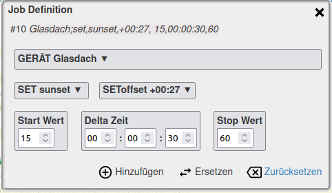
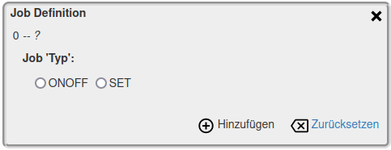

schedule+
schedule+
2022-06-15
Edit DaySchedule and Jobs
Create and customize the schedule and it jobs
The page 'Actual DaySchedule' also provides access to creating and customizing DaySchedule with its jobs.

The 'DaySchedule' dialog box shows the selected current daily schedule and icons for editing them:


 Add
the entry of the job closes and it is calculated according to the
definitions.
In the 'Current day schedule' it will be visible if the calculated times are still in the further current day schedule.
Add
the entry of the job closes and it is calculated according to the
definitions.
In the 'Current day schedule' it will be visible if the calculated times are still in the further current day schedule.
- Updating the day schedule, this removes already executed jobs of the day from the overview
- The menu panel specifies the current schedule; it is also a selection menu for loading other DaySchedules
- Processing of the entire DaySchedule
- Adding an additional job
This adds the job to the current DaySchedule, but does not save it in the (.ini) file; general changes to the DaySchedule are made only with the call.
Editor -- Editing a DaySchedule
When the editor is called, the previously selected DaySchedule is displayed in tabular form:
Note
Another DaySchedule can be requested by entering it in the dialog box and opened with 'Reload'. If no DaySchedule with the specified name exists, a new plan is created automatically.
 'Save' saves changes to the DaySchedule under the name specified in the dialog box.
'Save' saves changes to the DaySchedule under the name specified in the dialog box.
 Deletes the specified schedule (.ini file).
Deletes the specified schedule (.ini file).
Another DaySchedule can be requested by entering it in the dialog box and opened with 'Reload'. If no DaySchedule with the specified name exists, a new plan is created automatically.
Edit a Job in the table
By activating a DaySchedule table row, the selection menu opens:
With 'Edit' and 'Insert a new job' the editing of the job is started, slightly different edits for ON/OFF switches and DIMMER are necessary.
Job for switches -- ON/OFF
The example represents switching operations for a switch
'Living Room'. The job has definitions for ON as well as OFF in
the four boxes, both tasks have delays (Offset). With a 'New Job' the
boxes would be unused.
'Add': the defined job is inserted
before the selected table row, 'Replace' exchanges the selected row. In both cases, the window closes and shows the changed DaySchedule.
 'Reset' deletes all entries in the four boxes.
'Reset' deletes all entries in the four boxes.
cancels the processing without changing the DaySchedule.
The four boxes for the ON/OFF or ON/OFF-Offset settings show the currently set times and delays and also work as a menu box.
Note:
In the menus, the first selection point means '---' Delete/Reset for the respective value.
ON/OFF
The switching times for ON and AUS are defined with 'Time',
'Sunrise', 'Sunset' in the left box; the time is absolute at
first. The right box defines the 'Offset'.
A special feature for ON/OFF is the specification '+ time'. This defines a time period which refers to the 'previous' time definition, i.e. to the previous line in the DaySchedule with a time definition -- such as ON, OFF, SET with consideration of a calculated offset!
Since this can also be the time definition for another device, switching sequences covering over different devices can be created.
A special feature for ON/OFF is the specification '+ time'. This defines a time period which refers to the 'previous' time definition, i.e. to the previous line in the DaySchedule with a time definition -- such as ON, OFF, SET with consideration of a calculated offset!
Since this can also be the time definition for another device, switching sequences covering over different devices can be created.
ON/OFF OFFSET
OFFSET' shifts ON and OFF times from their absolute values. The value of the shift defines the 'time span'. This creates not a rigid, but a variable schedule for the switching operations.
The time span for 'random' is a base value, i.e. the daily calculated value of the displacement is in the range from zero to the max. value of the time span.
It is necessary to distinguish how the time/time span is in relation to the absolute ON/OFF time. With '+' and '~' it shifts the switching time into the future, with '-' and '~-' the calculated switching time is before the absolute time.
The time span for 'random' is a base value, i.e. the daily calculated value of the displacement is in the range from zero to the max. value of the time span.
It is necessary to distinguish how the time/time span is in relation to the absolute ON/OFF time. With '+' and '~' it shifts the switching time into the future, with '-' and '~-' the calculated switching time is before the absolute time.
Job for DIMMER -- SET
Dimmers are not only simply switched on/off, but a brightness value or a gradient is defined.

'SET' and 'SEToffset' correspond to the ON/OFF settings.
The following three boxes describe a course of the dimmer brightness.
Via the 'Delta Time' the brightness is changed in single steps from the 'Start Value' to the 'Stop Value'. The start value can be smaller than the stop value, i.e. the brightness decreases.
Editor -- Adding a day job
If an additional job is to be added to the active, current daily
schedule on the current day, this can be done without changing the
DaySchedule / .ini file.
With thecall
on the 'Current DaySchedule' page, a "new" job is defined and added only
to the current jobs of the active DaySchedule, but not stored in the
(.ini) file.
This means that the addition is only valid for the currently loaded daily schedule. When reloading the day plan, the 'new' job is no longer in the day plan! This also applies to the day transition.
General changes to the DaySchedule are only made with the call above.
With the
This means that the addition is only valid for the currently loaded daily schedule. When reloading the day plan, the 'new' job is no longer in the day plan! This also applies to the day transition.
General changes to the DaySchedule are only made with the call above.
After calling the 'Current DaySchedule' page, first the type of the 'New Jobs' must be selected:

Then the 'Job Definition' dialog is displayed as described above for "Job for Switch -- ON/OFF" or "Job for DIMMER -- SET".